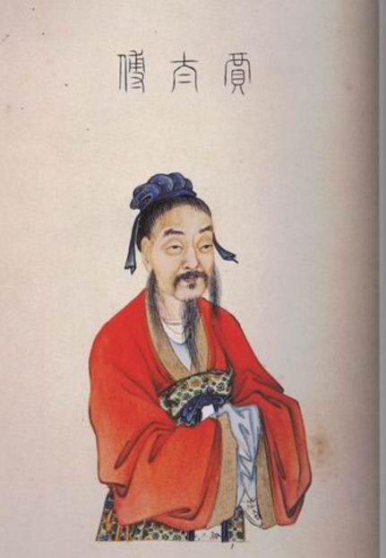
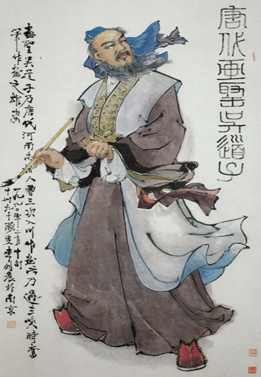
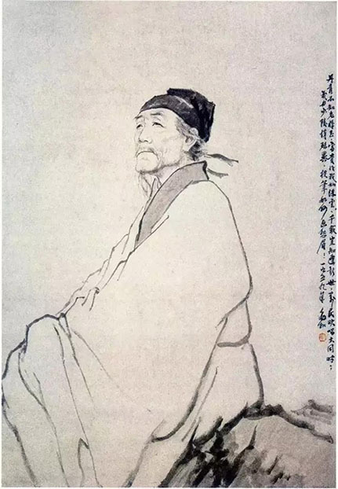
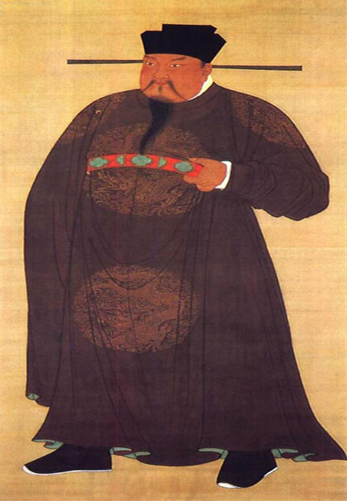

洛阳历代名人
贾谊
贾谊（公元前200年～公元前168年），汉族，洛阳（今河南省洛阳市）人，西汉初年著名政论家、文学家，世称贾生。贾谊少有才名，十八岁时，以善文为郡人所称。文帝时任博士，迁太中大夫，受大臣周勃、灌婴排挤，谪为长沙王太傅，故后世亦称贾长沙、贾太傅。三年后被召回长安，为梁怀王太傅。梁怀王坠马而死，贾谊深自歉疚，抑郁而亡，时仅三十三岁。司马迁对屈原、贾谊都寄予同情，为二人写了一篇合传，后世因而往往把贾谊与屈原并称为“屈贾”.
贾谊著作主要有散文和辞赋两类， [1] 散文的主要文学成就是政论文，评论时政，风格朴实峻拔，议论酣畅，鲁迅称之为“西汉鸿文”，代表作有《过秦论》《论积贮疏》《陈政事疏》等。其辞赋皆为骚体，形式趋于散体化，是汉赋发展的先声，以《吊屈原赋》《鵩鸟赋》最为著名。
吴道子
吴道子（约680年—759年），又名道玄，唐代著名画家，画史尊称画圣。汉族，阳翟（今河南禹州）人。约生于公元680年（永隆元年） ，卒于公元758年（乾元元年）前后。少孤贫，年轻时即有画名。曾任兖州瑕丘（今山东滋阳）县尉，不久即辞职。
后流落洛阳，从事壁画创作。开元年间以善画被召入宫廷，历任供奉、内教博士、宁王友。曾随张旭、贺知章学习书法，通过观赏公孙大娘舞剑，体会用笔之道。
擅佛道、神鬼、人物、山水、鸟兽、草木、楼阁等，尤精于佛道、人物，长于壁画创作。
杜甫
杜甫（712年～770年），字子美，自号少陵野老，唐代伟大的现实主义诗人，与李白合称“李杜”。出生于河南巩县，原籍湖北襄阳。为了与另两位诗人李商隐与杜牧即“小李杜”区别，杜甫与李白又合称“大李杜”，杜甫也常被称为“老杜”。
杜甫少年时代曾先后游历吴越和齐赵，其间曾赴洛阳应举不第。三十五岁以后，先在长安应试，落第；后来向皇帝献赋，向贵人投赠。官场不得志，目睹了唐朝上层社会的奢靡与社会危机。天宝十四载（755年），安史之乱爆发，潼关失守，杜甫先后辗转多地。乾元二年（759年）杜甫弃官入川，虽然躲避了战乱，生活相对安定，但仍然心系苍生，胸怀国事。杜甫创作了《登高》《春望》《北征》以及“三吏”、“三别”等名作。虽然杜甫是个现实主义诗人，但他也有狂放不羁的一面，从其名作《饮中八仙歌》不难看出杜甫的豪气干云。
赵匡胤
宋太祖赵匡胤（927年3月21日－976年11月14日），小名香孩儿 。涿郡人 ，生于洛阳夹马营（今河南省洛阳市瀍河区东关） 。五代至北宋初年军事家、政治家、战略家，宋朝开国皇帝（960年2月4日－976年11月14日在位）。后周护圣都指挥使赵弘殷（宋宣祖）次子，母为杜氏（昭宪太后）。
赵匡胤在后汉时投奔枢密使郭威，致身行伍，并于后周世宗柴荣在位时随征北汉、南唐，战功卓著。柴荣病重时，升为殿前都点检，成为禁军最高统帅。显德七年（960年），赵匡胤登基为帝，改元建隆，国号“宋”，史称宋朝或北宋。
开宝九年（976年），赵匡胤逝世，享年五十岁。在位十六年，累谥为启运立极英武睿文神德圣功至明大孝皇帝，庙号太祖，葬于永昌陵。今有诗作《咏初日》传世。